Ganga Aarti
Evening prayer ceremony at Dashashwamedh Ghat with lamps, chants and crowds.
Varanasi is one of the oldest living cities in the world, set along the banks of the river Ganga. It is known for its long line of ghats, daily rituals, and centuries-old temples.
For travelers, Varanasi offers a mix of intense spiritual energy, photogenic ghats, boat rides, and chaotic but memorable old lanes filled with chai, sweets and local shops.
Evening prayer ceremony at Dashashwamedh Ghat with lamps, chants and crowds.
Early morning boat ride to see the ghats come alive in soft light.
Important Shiva temple; expect security checks and queues.
Narrow alleys with food stalls, shops, cows and old buildings.
Reach Dashashwamedh Ghat 45–60 minutes before the aarti to find a good spot or hire a boat.
Start before sunrise. Boats can be hired from many ghats; rates are negotiable.
Wander through lanes around the ghats, trying lassi, kachori, jalebi and chai.
Use these as a starting point. Adjust timing based on season and crowd.
Ideal for tight schedules
Full day in the city
Add a calm day trip
Simple guesthouses near the ghats. Basic rooms, close to the action.
Good for backpackers and short stays.
Comfortable hotels with AC, Wi-Fi, breakfast and better noise insulation.
Balanced choice for most travelers.
Riverside stays or well-known chains with strong service and views.
Best for families and longer trips.
 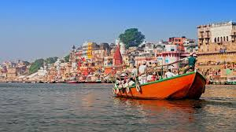
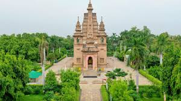
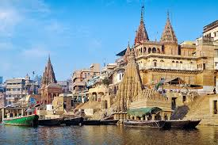
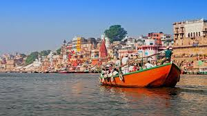
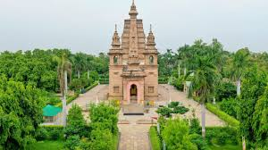
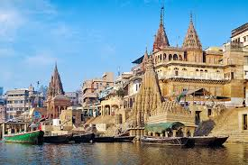
 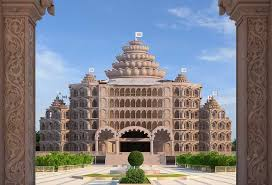
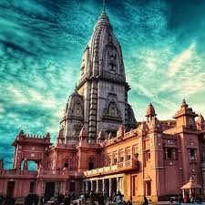
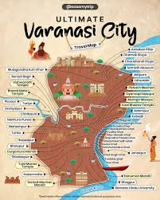
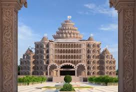
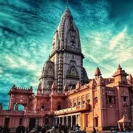
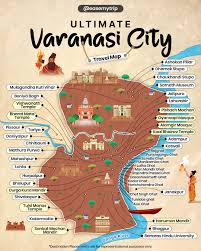
A few simple habits make the experience smoother.